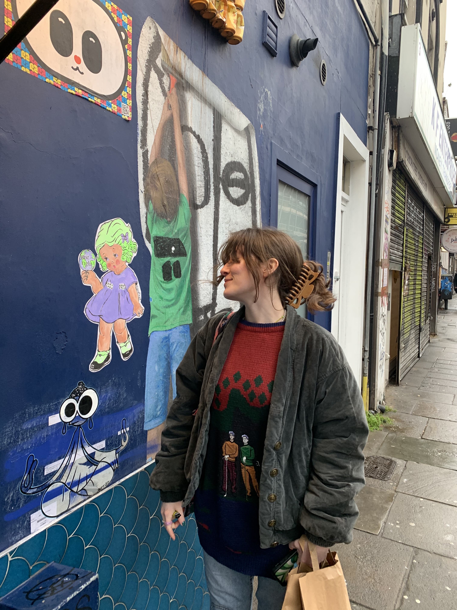
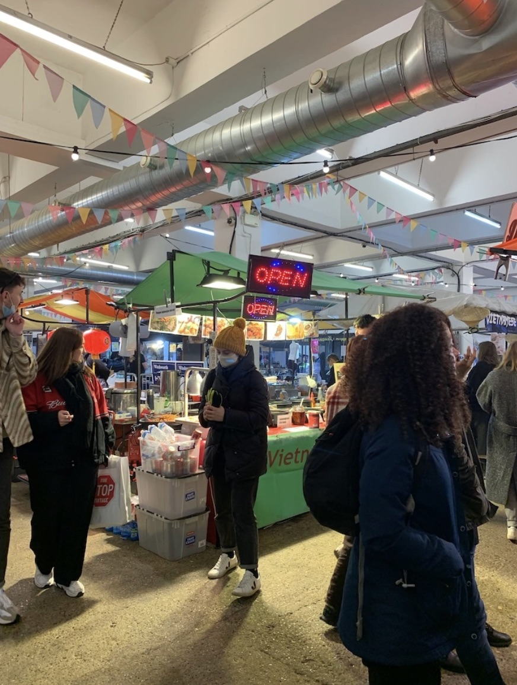

Brick Lane is a historical and culturally diverse area of London, located in the borough of Tower Hamlets. It is famous for its street art, vintage markets and shops, and curry houses, making it a popular destination for locals and tourists alike. The area is home to some of the most stunning and thought-provoking murals in the city, created by both local and international artists! The streets are covered and you can take a self-guided walking tour to discover the art or join a guided tour to learn more about the artists and the stories behind the murals.(Here's a great one to book through Totally Tailored)
The street art makes for a great insta pic!

UPMARKET in Brick Lane
Another attraction in Brick Lane is the food scene. The area is famous for its curry houses, and you will be sure to find some of the best Indian food in the city here. The restaurants are often busy, but the food is worth the wait. If you want something quick, you can also find street food stalls offering everything from bagels to stirfry and vegan burgers.
- Spots I recommend:
- UPMARKET
- Global food market open Saturdays and Sundays. Affordable, authentic eats.
- Beigel Shop
- The best bagel shop in London.
- Brick Lane Market
- This market is perfect if you are a foodie. They have hip food stalls, vegan options, fresh pasta, gormet burgers, and more
For those interested in history, Brick Lane has a rich past, with a strong Jewish heritage. You can visit the Brick Lane Market, which started as a Jewish market in the 19th century and has now transformed into a diverse street market, offering everything from vintage clothing to handmade crafts and antiques. Anything you buy here would make for a cool souvenir. On a more cryptic note... you can also learn the history of Jack the Ripper on Brick Lane through a guided tour... If you dare ;)